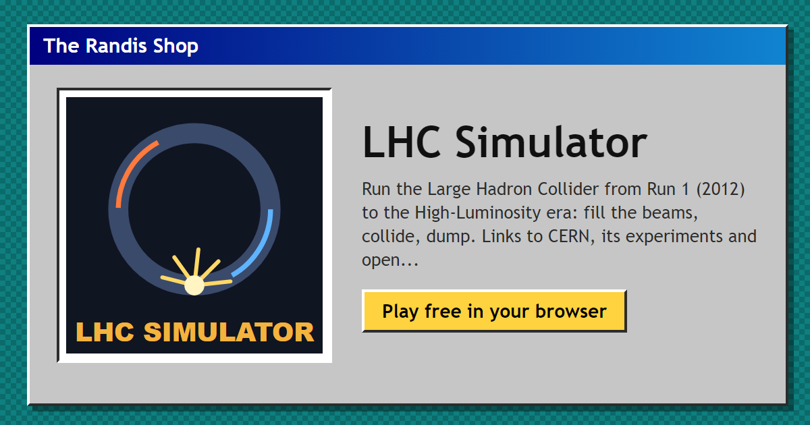

LHC Simulator

Run the Large Hadron Collider from Run 1 (2012) to the High-Luminosity era: fill the beams, collide, dump. Links to CERN, its experiments and open data. 1 run in 100 opens a portal to hell, or tempt fate and open one yourself.
Made with Randis UDS, a free desktop app that builds the tools you describe.